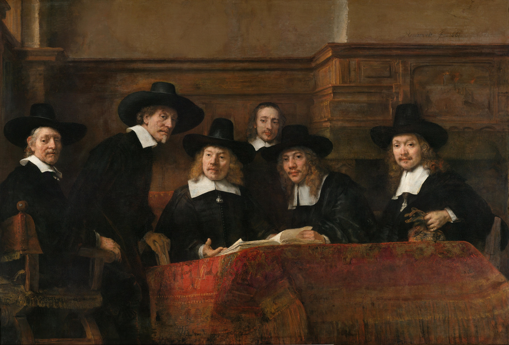
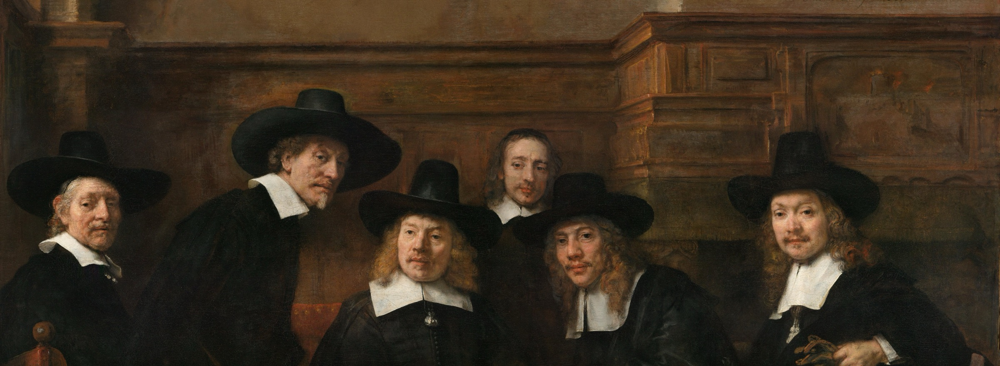
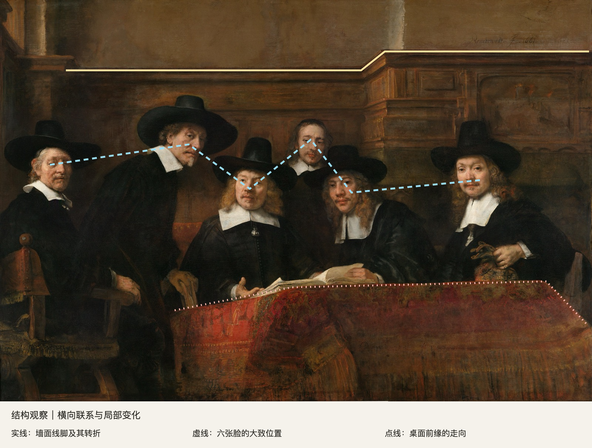
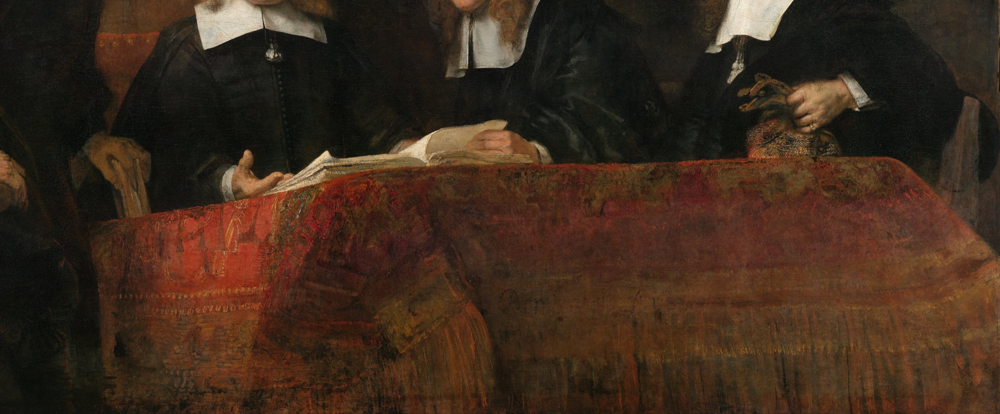
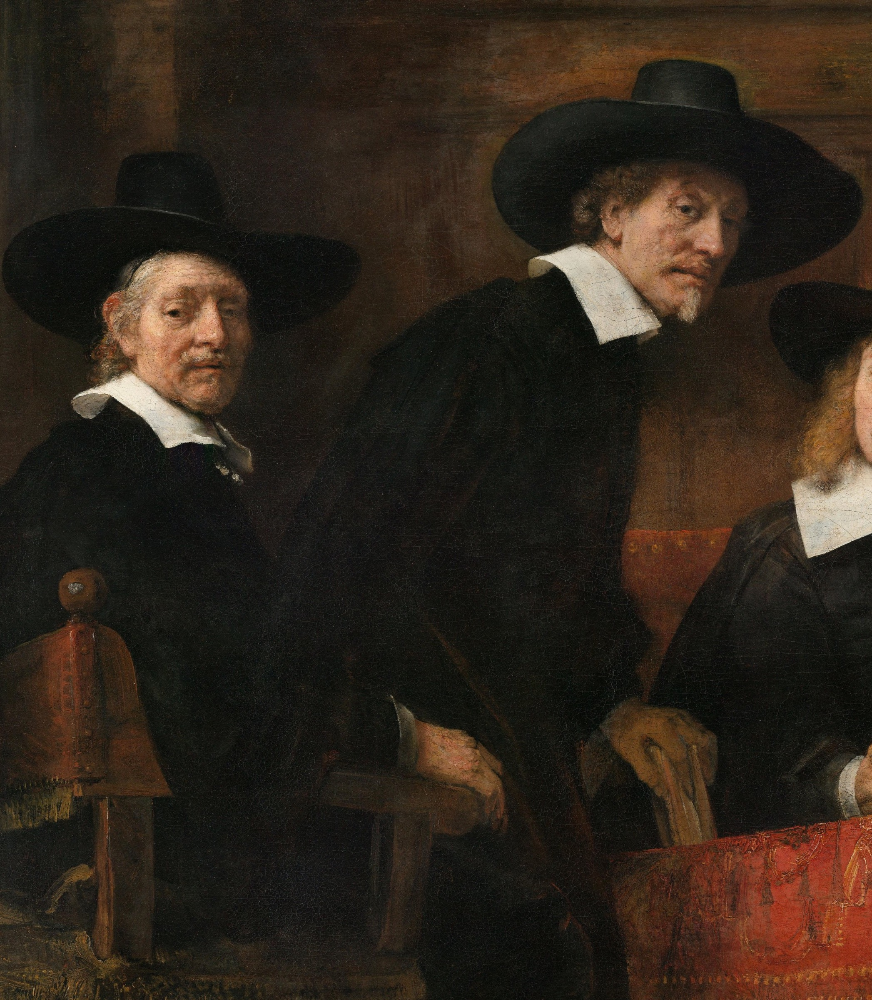
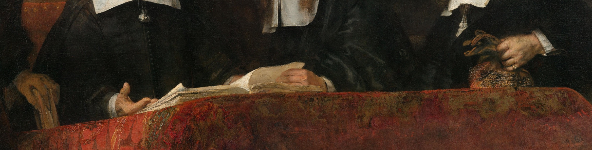
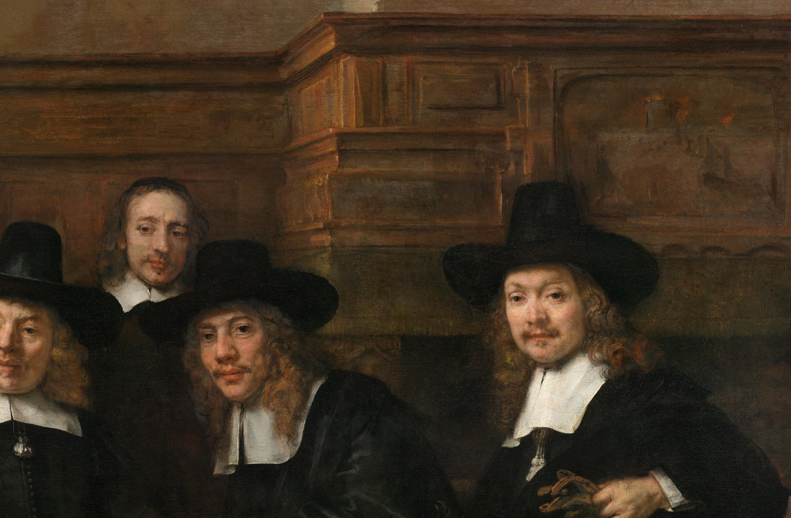

伦勃朗的《布商行会理事》把六个人安排在桌后：五人戴着宽檐黑帽，一人从后方露出头部；有人端坐，有人身体前倾，书还摊在桌上，手势也没有完全收回。他们大多朝向画外，仿佛我们走近时，原本进行着的事情暂时停了一下。
这幅画的难点，是把几种不同要求组织在一起。每张脸都要能够辨认，众人又需要构成一个整体；画面要有庄重的稳定感，又不能像六张肖像拼接；房间没有深远的景观，桌面、座椅和几处遮挡仍要让人感到前后。它的办法集中在三个关系上：横向骨架容纳高低变化，连续暗部托出分散的亮区，面向观者的目光与尚未结束的动作共同形成一次停顿。

图1 伦勃朗，《布商行会理事》，1662年，布面油画，191.5×279厘米，荷兰国立博物馆藏，阿姆斯特丹市借展。图片来自馆方公开高清图，公有领域；下文局部均由同一图像裁取。
一、先看共同处境，再看六张脸
画中人物属于阿姆斯特丹呢绒行业的质量检验机构。五位理事与一名侍从围绕桌子出现，作品原为行会会馆订制。它既记录具体的人，也呈现一组人在共同场所履行职责的形象。这一背景能解释桌子、书册和集体肖像之间的联系。馆藏记录
即使暂时不认识他们，画面的组织仍然成立。黑衣、白领、黑帽反复出现，先使我们把这些人看成同一群体；桌子又给这群人一个共同的位置。随后，面部轮廓、领口形状、头部高度和身体姿态才逐渐分开。观看由整体进入个体，个体的区别又持续帮助我们辨认整体。
这种双向关系很重要。只强调肖像相似性，容易得到六个彼此无关的人；只追求一团完整的黑白形状，人的差别又会消失。伦勃朗保留了服装的大面积相似，同时把差异集中在脸、领口和手这些容易辨识的区域。远看时形象统一，近看时仍有足够的信息区分人物。
这里的共同身份也不意味着画面平均。左侧第二人的头部明显更高，中央几人的手靠近书，后方侍从的身体则大部分被挡住。不同人物获得的面积、姿态和物件联系并不相同。每个人被认真呈现，与每个人占有完全相同的视觉分量，是两件事。讨论这幅画的群体秩序，需要保留这些实际差异。
从左向右辨认位置时，可以先记住几个视觉特征：最左侧老人坐在扶手椅中；第二人前倾，手靠着椅背；中间一人靠近书册，掌心向上；侍从位于后方；右侧两人一人手搭书页，一人握着手套。物件和动作给出了比姓名更直接的观察入口，也使人物不至于退化为一排面孔。
二、横向骨架，容纳并不整齐的人群
把细节暂时放开，这幅画首先显出几道横向组织：上方墙面的线脚，中段连续展开的帽檐与面孔，下方桌沿和桌毯的大块形状。宽幅画布让这些部分能够彼此呼应，人群沿着画面展开，室内建筑又为他们提供一个稳定的包围。
这些横向关系并不是几条严格平行的直线。上方线脚在右侧转折，帽子有高有低，桌前缘也向两侧产生斜度。它们更像几条宽窄不同的带状区域：墙面和线脚在上，人群居中，桌毯铺在下。整体方向一致，局部的角度仍然活跃。

图2 横向排列中的高低变化。请同时看帽檐、脸和肩膀：它们的节奏并不完全重合，人物因此没有排成一条机械的直线。
最显著的变化来自左侧第二人。他的脸高于左侧老人和中央坐者，肩背形成一条向下的斜线，衣服的大块暗色则把高处的头接回下方桌边。只把他的头单独看，会觉得它从队列中跳了出来；连同身体观看，就会发现这个偏离有支撑，仍属于整体。
中央和右侧的变化较小。白领有的横向铺开，有的向下垂得更长；帽檐有的宽，有的倾斜；脸之间的间隔也不相等。这些差异让目光在相近的视觉单元之间移动，每到一处都能辨认到新内容，却不必重新寻找整幅画的结构。
横向骨架的作用，是让变化有一个参照。没有参照，高低只是散乱；有了共同方向，一个略高的头、一处倾斜的肩就会变得可读。稳定和生动由同一组关系产生：我们能感到偏离，正因为同时感到大体的连续。
如果把六人的脸排在完全相同的高度，再给他们相等间距，群体身份仍然清楚，但身体的不同状态会被削弱。反过来，若每人朝向、站位和亮度都大幅变化，辨认他们属于一次共同活动就需要更多线索。这幅画处于两者之间：保留足够的共同形式，使小幅差异能够承担表达。

图3 结构辅助标注。线条仅提示文中讨论的位置关系；连接面孔的虚线不是视线轨迹。原图：荷兰国立博物馆；标注：本文制作。
三、黑色连成整体，白色分出节点
画中的黑衣面积很大，相邻人物的袖子、肩膀和胸口有时几乎接在一起。但这种连续并没有让六个人变成无法分辨的一团。原因之一，是面孔和白领在暗部上形成了多个清楚的节点；原因之二，是暗色内部仍保留了转折和温度差。
帽子尤其值得看。黑帽的轮廓贴着较亮的暖褐背景，宽檐把头部从墙面中分出；帽檐下又落着阴影，脸因而不是孤立的亮色圆块，而是从帽子、头发和领口构成的包围中显露出来。亮区获得了清楚的边界，同时保留了体积。
白领的形状也参与肖像区别。左侧老人的领口随着颈部转向，边缘有折面；中央坐者的白领向两侧打开，像是胸口上方的一道横向停顿；右侧人物的领口更长，明亮形状向下延伸。白色不只照亮人脸，也告诉我们颈部、胸口和身体大致怎样朝向。
这些白色并不处处一样亮。某些边缘接近明亮的乳白，折入内部的部分则带灰；局部的薄暗线把两片领口分开。若整片领子都涂成同一种白，形状会更像平面的标签，颈部与衣服之间的空间就会减弱。有限的灰度过渡，把醒目的标记重新变成了衣物。
黑衣同样需要内部差异。前倾者的肩背，中央人物的袖口，右侧人的胸前，并不具有相同的明暗。靠近身体转折的地方，可以读到微弱的灰褐变化；更深处的部分则融入暗色。在这里，轮廓有时明确，有时消退，我们仍能结合脸的位置、袖子走向和手的落点，补足一具身体。
这也解释了画面为何可以保持大面积深色而不失去层次。每一处衣褶都清楚，会让黑衣布满互相竞争的细节；所有衣服都黑得毫无差别，前后又会合并。画面把清楚的信息留在辨认人物和理解动作所需要的地方，其余部分以相近暗色维系整体。
观看时，可以比较两种边界：脸与帽檐的接触处较容易被发现，衣袖与旁人黑衣相接处则经常不那么清楚。两者承担的工作不同。前者保证身份与表情可读，后者允许人群合成一个连续形状。视觉秩序不仅取决于哪里被照亮，也取决于哪些边界允许暂时隐去。
四、红色桌毯，把分散的人物接回一个场所
桌毯占据前景很大的面积。它的红与赭黄、褐色纹样交织，和墙面的暖褐色接近，又比背景更浓、更鲜明。黑白人群的颜色相对克制，这块织物因此成为画面里强烈的色彩区域。
但面积大、颜色鲜明，并没有使它完全压过人脸。桌毯分布在画面下方，人物的脸则在上方形成若干较小却对比清楚的亮区。色彩重心和肖像重心分处不同位置：前景的红把整幅画压稳，脸部和白领使我们辨认正在面对谁。两种注意力互相牵引，画面不必把所有醒目的手段都集中在同一个地方。

图4 桌毯同时提供色彩面积、共同前景和表面转折。上沿附近的书页与手，使桌子成为人物正在使用的物件。
桌毯也不是一块均匀的红色矩形。左侧局部较鲜明，中央向下垂落的部分有更深的褐影，右侧纹样沿折面延伸，底部的穗边又形成松散边缘。红色内部的明暗变化，使它既能作为一个大块被辨认，又能在放大后分出朝向和材质。
这件织物建立空间的方式很具体：覆盖在桌面上的部分向后延伸，翻过桌沿的部分垂向下方；纹样随之改变方向，明暗也发生变化。我们不必完整看到桌腿，就能推断桌子具有厚度和深度。遮住了家具的结构，仍可以通过覆盖物的形变把结构交代出来。
更重要的是，桌毯把分开的身体联结到同一个前景。六个人的姿态各不相同，下方却共同受到桌子的遮挡；手或书页接触桌面，身体则在它后方延续。这个连续前景为分散的肖像提供了共同支点。
假设把桌毯收缩成很小的一块，前景会露出更多不同方向的腿、椅子和衣服，人物的下半部也需要更多处理。假设把它变成一整块没有纹理和转折的纯红，颜色仍醒目，桌子的体积却更难成立。这里的作用来自色彩、面积、折面和遮挡共同配合，不能仅用“红色强调重点”概括。
五、浅空间仍然有清楚的前后
这幅画没有一条道路通向远方，也没有逐层缩小的人群。主要活动发生在靠近观者的一小段室内。空间的深度集中在几个相邻层面：前景桌毯，桌后的书和手，坐着或前倾的人，后方侍从，最后是木墙板与建筑转角。
这些层面互相咬合。书页的浅色压在桌毯上沿，手搭在书页附近，袖子又接回人物身体。右侧前排人的帽子遮住侍从的一部分下方轮廓，侍从露出的脸与领口则位于两位前排人物之间。每一处重叠都只交代一小段关系，合起来便足以组成房间。
其中最有用的，是遮挡方向基本明确：近处东西盖住远处东西，局部轮廓在交界处中断，再在另一侧或另一位置出现。我们因此能够推断被遮住的部分继续存在。画面没有必要为每个人画一圈完整边线，也不需要让每件物品露出全貌。
前景左侧的椅子提供了另一种空间信息。扶手、椅背、木构件与坐者身体的接触，使老人确实坐在一个可以承重的物件上。旁边前倾者的手又靠向另一处椅背。两人的头部虽然都能看清，下方姿态却通过不同支撑关系被区分。
桌沿与墙面线脚的转折，则补充了方向。尤其右上方建筑向外凸出的部分，几条边缘向不同方向延伸，使背景具有前后表面。即使它的色差不强，转角仍会改变我们对房间的理解。背景在这里保持安静，却没有完全退化成没有结构的底色。
“空间浅”指前后展开的范围有限，并不等于“没有空间”，也不等于所有对象同等重要。后方侍从的脸位于画面中段上部，但身体被挡住；中央坐者靠近桌上书册，手势也更完整。位置、遮挡、动作与物件联系持续分配着视觉分量，横向组织并没有取消这些差别。
六、起坐之间的姿态，给静止的画面带来时间
左侧第二人的姿态，是整幅画最容易引起动作联想的地方。他的头部高出坐者，躯干向前倾，肩线倾斜，一只手靠着椅背。与身旁老人安稳地陷在椅中的姿势相比，他似乎还没有到达一个可以长久保持的状态。

图5 坐定与起坐之间的对照。动作感来自头、肩、躯干与椅背之间的关系，不只来自头部高低。
这与单纯把一个人画得更高有所不同。一个站得笔直的人，也可以非常稳定；前倾的躯干与手部支撑则让我们想到重心正在变化。旁边已经坐定的人提供了参照：一人身体收拢在椅中，一人身体仍向外、向前展开。不同稳定程度同时存在，静止图像便获得了前一刻和后一刻。
我们可能把他理解为正在起身，也可能理解为即将坐下。两种读法都由现有姿态支持：身体处于过渡中，方向尚未完全明确。画面把一个过程压缩在单一姿态里，观者因此会补足动作的连续性。它不需要画出前后两帧，椅子与身体的关系已经让时间可以被想象。
馆方关于预备素描的研究，为这一观察提供了创作过程的线索：单人素描中的这位理事站得较直，成画则改为略微俯身；研究者认为，这可能加强了起坐动作的感觉。相关作品中，坐着的雅各布·范隆习作藏于国立博物馆，站姿习作藏于鹿特丹，另有柏林的组合稿。预备素描研究
这处调整同时改变了形状和时间。躯干前倾，肩背便从竖直变为斜向；头部仍高于坐者，又不再像一根直柱；手靠着椅背，使不稳定姿态有了接触点。动作、轮廓和支撑在同一处得到处理，因而不显得像是在整齐群像上额外添加一个夸张动作。
其余人物没有跟着做同等幅度的变化。中央坐者的身体相对安定，右侧两人也仍围绕桌面。较大的动作被安置在左侧，让画面有一个偏离稳定状态的区域；其他部分保留停留和承接。动态因此具有范围，没有扩散为全体骚动。
这里值得学习的是变化量的分配。让每个人都半起身，未必会增加自然感，因为整个场面将需要解释一个更强烈的事件。当前画面只需一点转身、抬眼和重心调整，就能够从正式肖像中引出片刻的生活感。动作量与整体气氛保持着配合。
七、目光向外，手仍留在事情之中
六张脸大体朝向画外，但头部转角并不相同。最左侧老人偏侧，前倾者的脸略微俯向我们，中央和右侧人物则以不同程度的正面与侧面出现。眼睛的细小朝向又与头部角度有所区别。即使大家都像是在注意观者，也没有因此变成六个相同的正面姿势。
这些目光使画外空间获得了作用。我们观看的对象也朝向我们，桌前那块没有画出来的地方便成为一个可能发生交流的位置。画面给人的接近感，既来自人物尺寸和前景距离，也来自这种相互面对的关系。
但目光只完成了一半组织。若所有人的手都规整地收好、书也合上，场面更容易成为一次准备完毕的正式合影。现在，书仍打开，中央的掌心向上，另一只手仍停在书页上，最右侧人物还拿着手套。身体有些部分已转向画外，另一些部分仍留在桌边的事情之中。

图6 面孔朝向画外时，手仍与桌边物件发生联系。这个局部使“正在办事”与“暂时回应”能够同时成立。
中央坐者向上的手掌，容易令人联想到说话或回应；旁边压着书页的手，则让书与人保持接触。一只手向外开放，一只手贴近物件，形成两种不同方向的联系。书页的浅色又在两者之间接出一小片明亮区域，使我们能够从脸沿着手找到桌面上的活动。
这不需要被写成某一句确定的台词。单凭掌心和嘴角，无法知道他们究竟在解释什么。可见而重要的，是动作仍然开放：书没有退出使用状态，手没有完全回到休息状态，人的注意却已经转向画外。共同活动与对观者的回应，在同一瞬间叠在一起。
艺术史关于群像画的讨论，常区分人物彼此之间的联系，与人物朝向观者的联系。关于本作的研究也曾争论：画中是否包含一次具体问答，还是应更多从肖像安排理解场面。这些讨论提醒我们，可以分析“仿佛被打断”的效果，而不必为画面补出一场有完整台词的会议。相关研究，第9—10页
人物之间没有激烈的互相对视，桌上活动却使他们保持关联；他们对画外的共同注意，又使分开的肖像具有同一个当下。内部联系和向外联系互相补充，群体的统一因此不只依赖服装与站位，还依赖注意力正在发生什么变化。
八、后排人物与背景，让人群具有厚度
后方侍从没有戴前排人物那样的宽檐帽，脸露在几位理事之间。前排的黑帽、肩膀遮挡了他的大部分身体，白领只露出较小的形状。这使他在群体中清楚可见，同时又处于另一层空间。

图7 从后排面孔到前排帽檐，再到背景建筑，可以辨认几层不同距离。中央上部的位置并没有消除前后区别。
如果只按几何位置判断重要程度，会很难解释这里的关系。侍从接近画面中部，头部也较高，但他的身体、动作与所占面积都受到限制。中央坐者则与书册、开放的手势以及前排位置相连。视觉分量来自多种条件共同作用，中心位置只是其中一项。
后排人物也使头部排列不再只是横向串联。他在前排两人之间露出，目光会从某张前排面孔移动到他，再返回另一位理事。这个短距离的前后跳转，使人群有了厚度。纵深无需很大，只要遮挡和位置可信，就能够被感知。
右侧背景的作用更缓慢。墙板的矩形分格、凸出的建筑边缘，以及上方那幅小画，都在暖褐色中维持较低的对比。先看人物时，它们不会强行争夺注意；稍后再看，它们又足以说明这些人处于一个有装饰、有表面转折的室内。
小画中的火光尺度很小，与人物和桌毯的体量不能相比。它在图像中形成一个可继续探索的细节，让右上方不只剩下没有内容的暗面。背景因此既有整体色调，又保留局部可读性。我们能够进入细节，而不必在第一眼就把每件东西认完。
人物与背景的边缘也有不同清晰度。某些帽檐在较亮墙面前非常明确，某些肩部却逐渐融入暗处。前后关系不完全依赖整圈清楚的轮廓；局部足够确定，其余部分可以收敛。画面因此保留了空气感，也避免把六个人切成六块贴在墙上的剪影。
九、非对称的平衡，来自多种分量互相承接
画面左侧有高起的人物和向下展开的黑色躯干，右侧则由两位坐者、较宽的桌面及背景建筑共同承担分量。两边没有镜像对应，却仍然稳定。平衡在这里依赖面积、位置和方向互相承接，并不要求左右内容完全相等。
前倾者较高、动作较明显，很容易吸引注意；但他的身体向桌边倾斜，手部也落回较低的位置。这个方向把高处的变化接回画面内部。右侧人物相对安定，较连续的肩背和袖子与下方桌毯相连，又为另一侧的变化提供承接。
桌毯尤其能稳住这种差异。它并不只集中在前倾者下方，而是从中左部大幅延伸到画面右边。红色面积的横向展开，对人群上部的高低变化形成了支撑。若只看头部，左侧的起伏比较明显；把下方大块织物一起看，整体就更完整。
上方留出的墙面同样参与平衡。人物没有把画布从顶到底填满，头顶仍有足够空间容纳线脚和墙体。高处那顶帽子因此能够形成变化，而不是直接撞到画框。空余部分使头部轮廓更清楚，也让群体保持在一个房间里，而非挤满整个画面的合影。
这类空余不等于没有作用。它控制了密度：脸、领口、手和书相对集中，墙面则让这些信息有一个较安静的周围。若把上方全部裁掉，群像会显得更紧、更直接，但室内的包围感和建筑的横向骨架也会减少。裁切改变的不只是剩下多少内容，还包括各部分如何相互衡量。
同理，单独裁出一张脸，可以研究它的体积和笔触，却看不到这张脸为何在全图中获得某种分量。分析局部之后需要返回全图，把面积、距离和邻近关系一起重新看。局部的精彩与整体的秩序，不能由同一种观看尺度完成判断。
十、细看笔触，理解清晰程度的分配
放大后，白领、皮肤、衣袖和桌毯并不是用同一种方式表现的。脸上鼻梁、颧部与眼周的色差较细，能够支持神情和转向的辨认；黑衣里有些笔触较宽，只需提示袖子和身体的大势。织物则用红、褐与黄的交错，保留花纹和表面起伏。
清楚程度与内容的重要关系并非简单的一一对应。桌毯某些局部的纹理很丰富，仍然不会自动比人脸更重要，因为它们分布在一块连续的大面积里；眼睛附近只要少量暗色和亮色，就能引发很强的辨认。对象本身的意义、局部对比以及所处位置，共同改变了细节的效果。
边缘也并非越锐利越好。领口靠近脸的部分较明确，向暗部延伸时可以减弱；袖子在手腕处需要交代连接，远离手的大片黑色则可以合并。清晰度由此沿着动作和辨认需求分布，而不是平均覆盖整个画面。
这种处理让不同距离的观看都能成立。缩小时，六张脸、白领和红色前景保住主要关系；放大后，手指与书页、衣褶与帽檐、墙板与织物又逐渐出现。更多细节没有破坏远看的整体，整体也没有以牺牲全部细节为代价。
本文配图采用同一馆方高清文件制作全图和局部，没有另行提亮暗部或改变颜色。屏幕尺寸与显示亮度仍会影响黑衣中的细小差别。观看时若暗部糊成一片，可以先放大全图核对轮廓与遮挡，再回到整体尺度判断，不必凭压缩缩略图认定原画没有层次。
十一、从这幅画中学习摄影与界面的视觉判断
这幅画对摄影的启发，可以从一次普通的室内合影说起。假设要拍一组共同做事的人，单纯让大家坐成一排、看向镜头，身份记录能够完成，但共同活动可能只剩桌上的几件道具。若保留真实的手部接触、不同的坐姿和一次转向，人物之间就可能出现更具体的联系。
关键在于动作确实有支撑。半起身的姿态需要椅子、手和躯干共同说明；翻看资料需要手与纸页接触；不同朝向需要一个可以理解的共同场景。只有“让大家自然一点”的指令，很难产生这些关系。拍摄时可以先观察人在实际活动中如何停顿，再选择能够把关系留在画面里的时刻。
同时需要控制可辨认性。姿态可以不同，脸与领口却应当避免彼此遮住；深色服装可以连续，但关键轮廓仍要能被辨认；桌面物件可以保留，但不必每件都与人物同样醒目。共同活动提供联系，明暗和位置保证辨认，两者需要一起安排。
用在UI视觉设计中，最值得借鉴的是“同类信息可以统一，同时保留必要差别”。例如一个包含多个方案的比较页面，卡片共享背景、宽度和标题层级，有助于用户理解它们属于同一组；价格、能力差异和当前选择则需要在固定位置清楚出现。共同形式负责建立类别，差异负责支持选择。
如果为了突出推荐方案，把它的字号、底色、位置、动效和尺寸全部改变，原本可比较的关系可能被破坏。反过来，把所有差别都压成同一种灰色，页面虽然整齐，用户也难以决定。可以先明确哪些内容需要并列比较，再决定强调分配在哪里。这与画中相似黑衣容纳不同脸、领口和姿态的组织问题有相通之处。
前后层级的启发则适用于编辑器一类工作空间。假设画布是主要操作对象，工具栏、属性面板和临时菜单需要让用户理解它们与画布的关系。背景、面板表面、边界和局部遮挡可以共同交代层次，不必把每个区域都加上同等强度的投影。真正需要清楚的，是当前操作在哪里发生、哪些内容属于同一层、临时出现的内容遮住了什么。
这也能帮助判断深色页面。大面积暗色可以使界面统一，但若所有面板都同样黑、边缘都消失，用户会丢失分区。可以用有限的表面亮度变化、明确的文字与局部边界，保留任务所需的区别。相反，每一块面板都描亮边、每一个模块都投影，会把整个空间切碎，主要内容不一定更容易被找到。
绘画还提示了一种检查方法：先退远看整体，再靠近看关键关系。对应到页面，可以先确认第一眼能否辨认主工作区和主要信息，再检查文字、控件与状态。若第一眼所有区域都同样抢眼，精修圆角和图标很难解决；若整体清楚但关键状态看不见，则需要回到具体反馈，而非继续削弱细节。
界面的观看最终要落到阅读、判断与操作。画里可以让一件小物品很晚才被发现，产品里的提交结果、错误原因和关闭入口则需要及时可见。因此，借鉴的重点是如何组织关系与分配清晰度。将它落实到设计时，还要逐项检查：这些主次是否对应用户此刻真正要完成的事情。
《布商行会理事》把这种组织做得十分集中：相近的服装维系集体，错落的脸和动作保留个体，桌子、书与手把人物接在同一活动里，面向画外的目光又让我们进入这一刻。横向稳定、局部变化与前后空间同时工作，画面才既能迅速被理解，也经得起继续细看。
资料与图片
- 荷兰国立博物馆：作品记录，SK-C-6：年代、尺寸、人物身份、委托与收藏信息。作品也译为《取样官》《呢绒商行会的理事们》。
- 荷兰国立博物馆：Snapshot：人物检验染色织物的职责，以及画面如同会议中片刻停顿的观看解释。
- Peter Schatborn，2017：雅各布·范隆坐姿习作目录研究：预备素描、人物姿态及成画修改的依据。
- Benjamin Binstock，2023：Aloïs Riegl and the riddle of Rembrandt’s Staalmeesters：本文参考第2页及第9—11页关于群像联系、观看关系与场景解释的讨论。
图片：荷兰国立博物馆，阿姆斯特丹市借展，公有领域。全图采用馆方高清复制图；五幅局部仅裁切和缩小，没有重绘、补色或改变明暗；结构辅助图另行叠加了说明线。图中横向、遮挡、动作与色彩关系的讨论，依据本文所示图像展开。